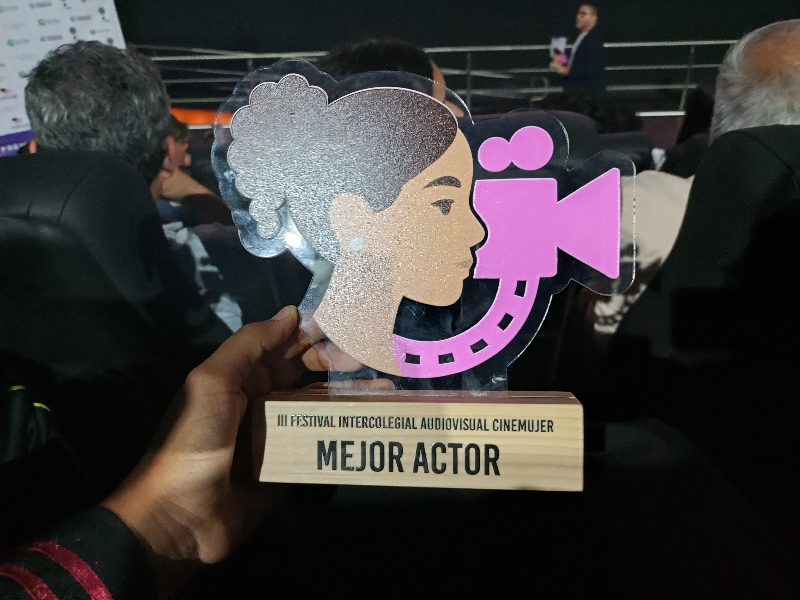
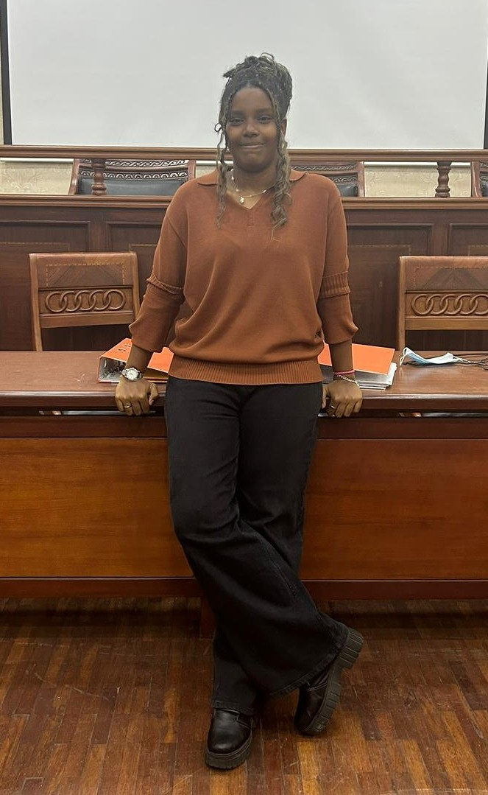
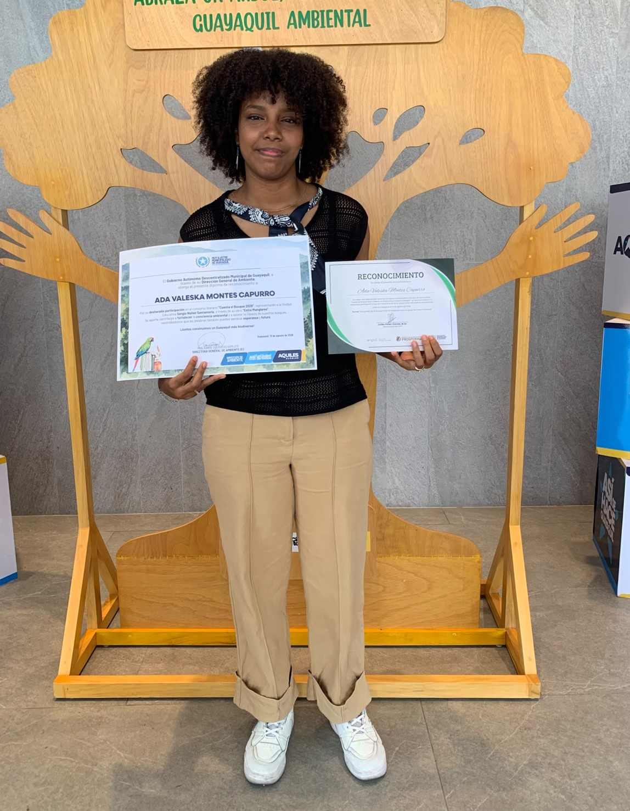
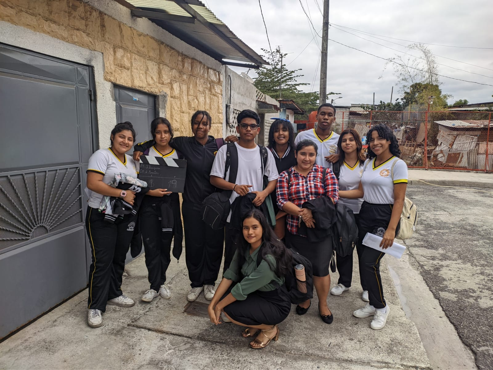

1°
Premios CineMujer - Dirección de la Mujer
En calidad de directora general, lideré la realización del cortometraje, que obtuvo uno de los reconocimientos más importantes de su categoría.
Deportista · Gestora de proyectos · Emprendedora
Transformo la disciplina del deporte en proyectos que conectan a las personas con su entorno y fomentan la sostenibilidad.


01 — Quién soy
Sólida formación en investigación sociológica y producción de contenidos visuales. Enfocado en la intersección entre el análisis del comportamiento social y la estética comunicativa.
Con experiencia en liderazgo y la ejecución de proyectos que requieren rigor investigativo, pensamiento crítico y un alto nivel de detalle técnico.
02 — Logros

1°
En calidad de directora general, lideré la realización del cortometraje, que obtuvo uno de los reconocimientos más importantes de su categoría.

N° 10
El cuento obtuvo un lugar entre los 15 mejores relatos publicados en la categoría de Bosques Secos y Manglares, destacándose por su calidad y temática.

87 %
Lideré la planificación estratégica de proyectos de conservación ambiental, logrando una tasa de participación del 87% del alumnado.
03 — Trabajos

El Plan Ambiente CRR (Cuidar, Reciclar y Reutilizar) es un proyecto innovador ideado, dirigido y liderado por Ada Montes, enfocado en promover prácticas sostenibles y generar un impacto positivo en el cuidado y preservación del medio ambiente.
Ver proyecto →
Dirección general en dos ediciones del Festival Intercolegial Audiovisual CineMujer, liderando la gestión creativa y técnica. Coordinación de los departamentos de arte y fotografía, obteniendo un galardón en categorías competitivas.
Ver proyecto →Programa escolar que combina entrenamiento atlético con huertos comunitarios y compostaje, en cuatro escuelas públicas.
Ver proyecto →Diseño e implementación de tres puntos fijos de acopio de reciclables en barrios sin acceso a recolección diferenciada.
Ver proyecto →04 — Experiencia
2022 — Presente
Dirijo el programa de limpieza y educación ambiental, coordino voluntariado y alianzas con el municipio.
2018 — 2022
Competí en pruebas de media y larga distancia, representando al país en torneos regionales y nacionales.
2016 — 2018
Apoyo en jornadas de reforestación y primeros programas de educación ambiental en escuelas rurales.
05 — Contacto
¿Tienes una idea de proyecto ambiental, una alianza o simplemente quieres saludar? Con gusto conversamos.